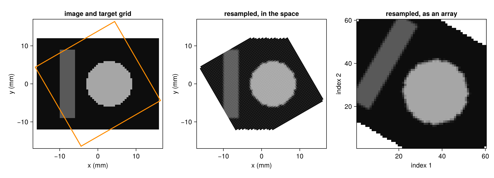

Getting Started
This page builds a grid, puts an image on it, selects parts of the image and resamples it onto a second, rotated grid. Grids, Spaces and Transforms explains the conventions behind it.
using TomoImages, CairoMakieA grid
A GridGeometry places voxels (in 2D: pixels) in a space. This one has 64 × 48 pixels of 0.5 mm; lengths are plain numbers in one unit, here millimeters. The origin is the center of the first pixel, chosen so that the grid is centered at (0, 0). Without space=, the grid lies in DefaultSpace, for work in a single coordinate system:
g = GridGeometry((64, 48); spacing=(0.5, 0.5), origin=(-15.75, -11.75))GridGeometry 64x48 in DefaultSpace (2D)
spacing: (0.5, 0.5)
origin: (-15.75, -11.75)
direction: axis-alignedindex_to_world gives the position of a pixel, world_to_index the (fractional) pixel at a position, and fov_center the center of the grid. The position (0, 0) lies halfway between pixels 32 and 33 along the first axis and between pixels 24 and 25 along the second:
index_to_world(g, (1, 1)), fov_center(g), world_to_index(g, (0.0, 0.0))([-15.75, -11.75], [0.0, 0.0], [32.5, 24.5])A geometry is indexed like an array. The result describes the selected pixels, each at its position:
right_half = g[33:64, :]
index_to_world(right_half, (1, 1)) == index_to_world(g, (33, 1))trueAn image
A TomoImage wraps an array with its geometry. The values here come from a function of the position (x, y) in millimeters: a disk of radius 6 mm (value 1) and a bar (value 0.5).
shape(x, y) = (hypot(x - 3, y) < 6 ? 1.0 : 0.0) + (abs(x + 8) < 2 && abs(y) < 9 ? 0.5 : 0.0)
img = TomoImage([shape(index_to_world(g, (i, j))...) for i in 1:64, j in 1:48], g);Every dimension has a name; without names they are x1, x2, .... The function that returns them, dims, is not exported, since DimensionalData.jl exports one of the same name:
keys(TomoImages.dims(img))(:x1, :x2)Selections keep the geometry: every selected pixel keeps its position. The right half of the image, every second pixel along x2; its spacing grows with the step:
part = img[33:64, 1:2:48];
index_to_world(geometry(part), (1, 1)) == index_to_world(g, (33, 1)), spacing(geometry(part))(true, [0.5, 1.0])The same by name gives the same geometry as indexing the grid, and broadcasting keeps the geometry too:
geometry(img[x1=33:64]) == right_half, geometry(2 .* img .+ 1) === g(true, true)Resampling onto a rotated grid
A second grid of 60 × 60 pixels of 0.4 mm, rotated by 30 degrees counterclockwise and centered at the same point. The columns of its direction matrix D are the unit vectors along its index axes 1 and 2; the origin is the center minus D * (spacing .* (size .- 1) ./ 2):
c, s = cos(pi / 6), sin(pi / 6)
D = [c -s; s c]
h = GridGeometry((60, 60); spacing=(0.4, 0.4), origin=-D * (0.4 .* [59, 59] ./ 2), direction=D)
rotated = resample(img, h; fillvalue=NaN);resample gives every pixel of the new grid the value of the image at its position, here with multilinear interpolation. The corners of the rotated grid lie outside the image; they get the fillvalue, here NaN, which the figure leaves blank. Left, the image (gray scale from 0 to 1.5) and the outline of the rotated grid, both in the coordinates of the space; middle, the resampled image in the same coordinates; right, the same resampled image as an array (index 1 to the right, index 2 up), which shows the content rotated clockwise by 30 degrees:

Explore a Tomographic Image continues with a 3D image: slices, positions and measurements in millimeters, and a view along a tilted structure.
This page was generated using Literate.jl.